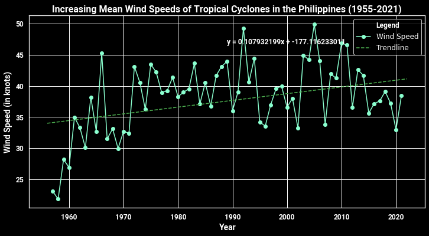
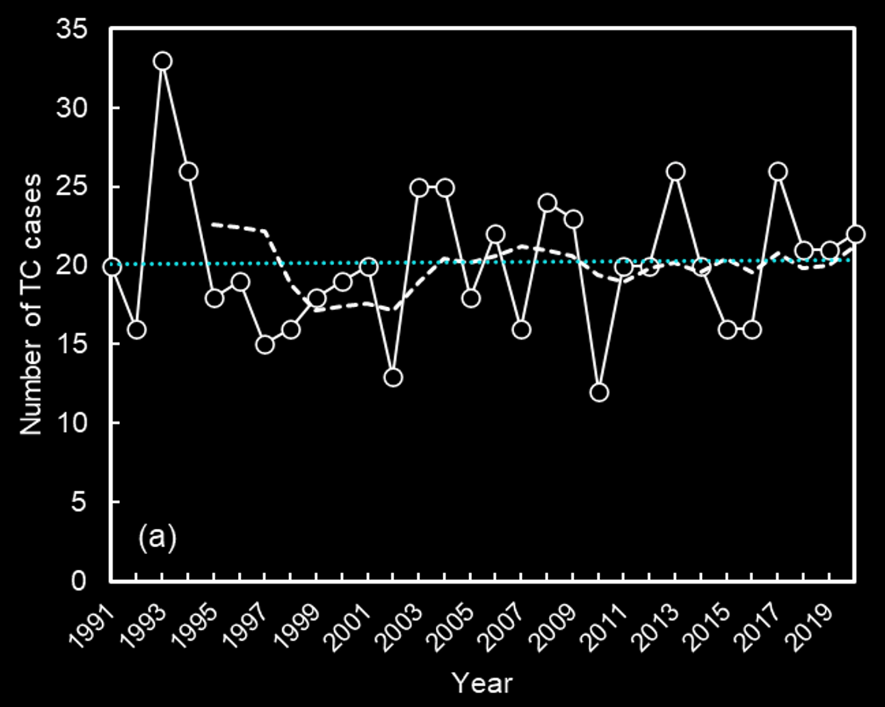

Exacerbated typhoons
The Philippines, situated in Southeast Asia, is classified as a developing nation. It experiences an average of 20 tropical cyclones annually. For those interested, this is a glimpse of what the aftermath of a typhoon typically appears like in our country.
Source: Twitter, @wonjasper
In the wake of these disasters, roads are often rendered impassable due to flooding. People find themselves on rooftops, desperately calling for assistance while avoiding the waters to steer clear of the risk of electrocution. Bridges and other vital infrastructures
collapse, leading to food shortages and weeks of power outages. Despite the immense challenges, Filipinos take pride in their resilience, but the line between being resilient and asking for help has been smeared by the lack of resources and stable systems.
The warming of the oceans have strengthened the typhoons in the Southwest Pacific. Based on the SPEARTC dataset (see code on my GitHub profile)
from the Asia-Pacific Data Research Center, the mean wind speeds of tropical cyclones in the Philippines have increased by 8 mph over the last 60 years.

Source Code, edrian-liao
The Philippine Atmospheric, Geophysical, and Astronomical Services administration or PAGASA is our national weather service that is mandated by the governement to protect the country's resources from natural
calamities. According to their long-term report, there has been an upward trend on the number of tropical cyclones visiting the Philippines.

Source: PAGASA National Weather Station
While I was back home, I had the firsthand experience of witnessing the devastation caused by Super Typhoon Egay, which made landfall in our region. With wind speeds reaching up to 140 mph, Egay left behind an estimated $123.6 million worth of
damage. What struck me the most was the resilience of my family and neighbors during the typhoon's arrival; there was no sign of fear.
Taken during the onset of Supertyphoon Egay last July 2023
However, the mood shifted dramatically the following morning when they discovered the extent of the damage to
their rice and corn fields.
Continue: Agriculture